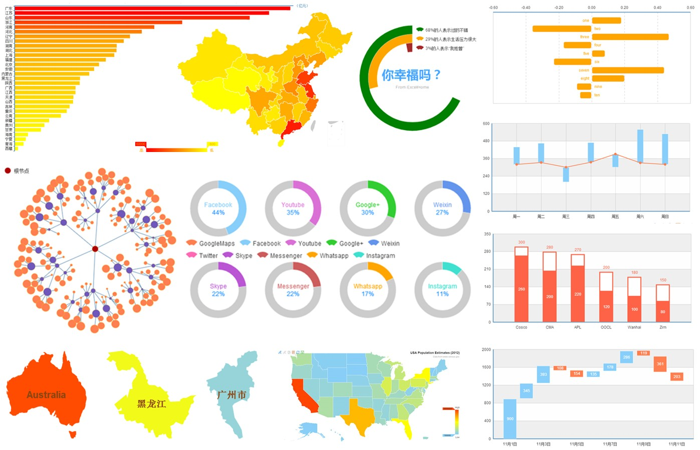

如今，数据已经成为了一种商业资本，一项重要的经济投入，可以创造新的经济利益。事实上，一旦思维转变过来，数据就能被巧妙地用来激发新的产品和新型服务。数据的奥秘只为谦逊、愿意聆听且掌握了聆听手段的人所知。
这仅仅只是一个开始，大数据时代对我们的生活，以及与世界交流的方式提出挑战。最惊人的是，社会需要放弃它对因果关系的渴求，而仅需关注相关关系。也就是说只需要知道是什么，而不需要知道为什么。这就推翻了自古以来的惯例，而我们做决定和理解显示的最基本方式也将受到挑战。
不久前，专业大数据可视化公司Tableau在纽交所成功上市，当日收盘涨幅64%，至50.75美元，共募集资金2.542亿美元，成为今年美国最大一笔科技业IPO。Tableau Software正是一家做大数据的公司，更确切地说是大数据处理的最后一环：
Excel
是最流行也是最常用的数据分析、数据绘图软件，
输出图表几乎毫无交互性可言，作为一款电子表格工具并不适用大型数据集和进行动态图表输出。
Matlab
主要面向科学计算、代表了当今国际科学计算软件的先进水平，
需要较为深厚的编程基础，比较适合科学方面的可视化项目。
Spss
功能强大且操作简单友好，偏重于统计分析，
需要一定的数理统计基础，且输出的图表在与办公软件的兼容性及交互方面有所欠缺。
Tableau Desktop
一款完全的数据可视化软件，专注结构化数据的快速可视化，
较高的服务费用，且构建交互界面需要发布到Server。
“互联网还没搞清楚的时候，移动互联来了，移动互联还没搞清楚的时候，大数据来了”马云在卸任阿里集团CEO的晚会上如是说
在数据每时每刻都在产生的今天，还需要一种手段快捷的为你或为你的客户直观形象的呈现那些能够反应当前状态或洞悉未来趋势的数据。
或许我们应该利用互联网技术快速甚至实时的获取你所关心的数据，然后提供可以辅助分析，辅助人们进行视觉化思考的数据可视化输出。
图表数据的默认分类不总是满足每一个人的需求。
就像如下的浏览器占比，我想知道IE所占的总比例，是默默的心算还是拿根笔出来？
这是ECharts，试试把你关心的数据图形拖拽到一起！
不可避免的有些时候会有些畸形数据存在，就像如下的销售数据：
双11的辉煌后你看到了这样统计数据，你得忍受这无多大指导意义统计图表一个月甚至更长时间？
这是ECharts，试试把畸形数据拖拽出来！
恩，剔除畸形数据后你好像还惊讶的发现了一个不太乐观的趋势？
如果你所呈现的数据足够让用户所关心，那么他们将不满足于查看可视化的图表：
浪费你服务器上宝贵的磁盘空间去异步生成数据文件？再大动干戈的开发文件下载的轮询请求？
这是ECharts，或许你只需给予一个“,”分隔的数据文本他们就懂了，试试点击这个图标！
你甚至可以打开数据视图的编辑功能，跟拖拽重计算相比，这可是批量的数据修改！
很多图表类型本身所表现的能力是相似的，但由于数据差异、表现需求和个人喜好的不同导致最终图表所呈现的张力又大不一样，比如折线图和柱状图的选择总是让人头疼？是否使用堆积也是一个艰难的决定？是放弃这个尝试还是重复的写上大段代码？
这是ECharts，我们提供了动态类型切换功能，让用户随心所欲的切换图表类型和堆积平铺状态。
试试把柱状图切换成折线图，或者切换堆积平铺状态，你会对这份数据有更多的解读。
基于坐标的图表（如地图、散点图）通过色彩变化表现数值的大小能直观形象的展示数据分布：
但如何聚焦到我所关心的数值上？比如我只想查看top 10%的地域有哪些？又找笔了？
这是ECharts，我们创造了称为值域漫游的功能，尝试上下拖拽左下角的那个控件！
他表达的意义并不需要过多的解析，看起来就像是理所当然的！
显示空间总是有限的，显示一大段时间跨度的数据是常见的需求：
密密麻麻的全放出来？提供一个日历选择器让用户频繁的选择切换？
这是ECharts，我们提供了数据区域缩放功能，带全局数值影子的刻度条加上三个可拖拽的手柄让你轻松完成数据区域浏览，你甚至可以启用更加直观的框选放大和后退！
拖拽和框选这两种交互会自动同步的！你或许已经发现了，随动的还有极值点和平均线的自动标注。
多系列数据在同一个直角系内同时展现有时候会产生混乱，但他们又存在极强的关联意义不可分离？
这是ECharts，我们提供了多图联动的能力（connect），能做的可不仅仅是鼠标划过的详情显示。
时空数据分析是信息可视化里一个相当重要的方向！
这是ECharts，我们提供可与任意图表搭配使用的时间轴控件以展现时空数据变化。
时空数据分析是信息可视化里一个相当重要的方向！
这是ECharts，我们提供可与任意图表搭配使用的时间轴控件以展现时空数据变化。
如何展现成千上百的离散数据从而找出他们的分布和聚类？
哦，不对，是成千上百万数据！貌似除了用专业的统计工具（如MATLAB）外别无选择！
这是ECharts，我们发明了基于像素的大规模散点图，就像用如下的散点区域就能够毫不重复的呈现36万组数据，这对于常规的应用，用现代浏览器就足以轻松展现百万级的散点数据！
当然，你会理所当然的启用框选进行数据区域缩放，是否发现了更神奇的事情？
系统中的每个节点都可以看成是一个带有一定能量的放电粒子，粒子间存在某种库仑斥力。同时，有些粒子间被一些“边”所牵连，这些边产生类似弹簧的胡克引力。在粒子间斥力和引力的不断作用下，粒子们从随机无序的初态不断发生位移，逐渐趋于平衡有序的终态。同时整个物理系统的能量也在不断消耗，经过数次迭代后，粒子间几乎不再发生相对位移，整个系统达到一种稳定平衡的状态。这就是力导向布局算法的直白描述，作为最美观的呈现复杂关系网络的图表你需要吗？
这是ECharts，我们提供了力导向布局图，比如呈现一个简单的人物关系网络：乔布斯，或者你可以切换查看一个更复杂的如Webkit内核的类依赖关系！
在数据每时每刻都在产生的今天，需要一种手段为你或为你的客户呈现那些能够反应当前状态或洞悉未来趋势的数据!
这是ECharts，我们提供了动态数据接口以方便你更快更形象地实现这一诉求！
多系列数据的同时展现呈现出丰富内容，但如何让用户切换到他所关心的个别系列上？
是的，用心的程序员都为此写了一排复选框去配合他们所使用的那笨拙的图表库去实现这项功能！
这是ECharts，我们当然愿意代劳，因为集成到图表上的直观交互才是最佳的用户体验，而且我们的图例开关是多维度的，点击那些图例，他的含义同样简单的无需解析！
有些时候多系列数据的堆积呈现比单一汇总更具表现力：
是的，不用抱怨，我们知道大多数的图表都没有堆积功能或仅支持单一堆积的！
这是ECharts，支持多系列，多维度的数据堆积，配合个性化配置的图形实体和自动伸缩直角坐标系，能呈现出更有内涵的统计图表！
仪表盘最常见的用途是显示关键性能指标以辅助于绩效管理。而漏斗图则在营销分析中广泛使用。
这是ECharts，我们提供了可高度个性化的的仪表盘和漏斗图图表！
有些时候混搭的图表会更具表现力也更有有趣味！
这是ECharts，我们提供的图表（共11类17种）支持任意混搭！
这是ECharts，我们提供的图表支持任意混搭，先看个简单又常见的线柱饼混搭例子：
这是ECharts，我们提供的图表支持任意混搭，再看一个稍微复杂点的混搭例子：
这是ECharts，我们提供的图表支持任意混搭。
配合事件响应你甚至可以在图表内就做出一个具有数据联动的交互系统！
试试点击选择一些省份？当然你可以把地图改为单选模式去呈现该省更多详细的数据！
这是ECharts，我们提供的图表支持任意混搭，或许你还可以发挥一下奇思妙想？
就像一般来说饼图（雷达图）并不适合呈现数据的变化趋势，如果用很多的饼图（雷达图）呢？
混搭出的这种多层嵌套图表我们给他起了个亲切的名字“千层饼”或者“虫洞”！
别因为图表的能力局限了你的创作力，ECharts拥有超过600项的配置选项，配合多级控制让它具备了高度个性化能力，开源后大量的应用反馈让研发团队吃惊，很多从未想过的图表样式被被创作出来了。

我们知道，很多时候我们需要一些吸引眼球的能力。
ECharts支持标注标线的炫光特效，特别用在地图上轻松实现百度迁徙数据可视化特效：
模拟迁徙
虽说Excel输出的图表毫无交互性可言，但其丰富的图表类型和配置项，简单易用，无疑是最常用的制作数据统计的工具。那看看ECharts和Excel都支持哪些图表类型？
| # | ECharts | Excel |
|---|---|---|
| 柱状图 | Yes | Yes |
| 条形图 | Yes | Yes |
| 折线图 | Yes | Yes |
| 面积图 | Yes | Yes |
| 散点图 | Yes | Yes |
| 气泡图 | Yes | Yes |
| K线图 | Yes | Yes |
| 饼图 | Yes | Yes |
| 环形图 | Yes | Yes |
| 雷达图 | Yes | Yes |
| 力导布局图 | Yes | No |
| 和弦图 | Yes | No |
| 曲面图 | No | Yes |
| 地图 | Yes | No |
业界有无数js图表库，不乏优秀的代表，如chartjs，FusionCharts，amCharts，flot，RGraph，jqPlot，gRaphaël等等。有的是免费甚至开源的，有的则是商业的，百度一下就能找到他们。
无法跟他们一一对比，在这选择了知名度很高的Highcharts，一个优秀，成熟的商业图表库。
先看看ECharts和Highcharts都支持哪些图表类型？
| # | ECharts | Highcharts |
|---|---|---|
| 柱状图（条形图） | Yes | Yes |
| 折线图（面积图） | Yes | Yes |
| 饼图（环形图） | Yes | Yes |
| 散点图（气泡图） | Yes | Yes |
| 雷达图 | Yes | Yes |
| K线图 | Yes | Highstock |
| 力导布局图 | Yes | No |
| 和弦图 | Yes | No |
| 地图 | Yes | Highmap |
| 特色图表（如仪表盘） | Yes | Yes |
再来看看ECharts和Highcharts都有哪些特性？
| # | ECharts | Highcharts |
|---|---|---|
| 拖拽重计算 | Yes | No |
| 数据视图 | Yes | No |
| 动态类型切换 | Yes | No |
| 值域漫游 | Yes | No |
| 大规模散点 | Yes | No |
| 炫光特效 | Yes | No |
| 多图联动 | Yes | No |
| 数据区域缩放 | Yes | Yes |
| 图例开关 | Yes | Yes |
| 多维度堆积 | Yes | Yes |
| 混搭 | Yes | Yes |
| 图片导出 | Yes | Yes |
License & Pricing |
Free Baidu BSD |
Non-commercial free under CC3.0 Commercial licenses $90~$3600 |
我们只是尽我们所能为你呈现数据真实的一面，
并且提供了一些直观、易用的交互方式以方便你对所展现数据进行挖掘、提取、修正或整合，
（拖拽重计算、数据视图）
让你可以更加专注于你所关心地方，无论是系列选择、区域缩放还是数值筛选，
（图例开关、数据区域缩放、值域漫游）
让你可以有不同的方式解读同样的数据。
（动态类型切换，多维度堆积，多图联动，混搭）
重新定义数据图表的时候到了，浏览ECharts所输出的图表，你不再只是个“读者”，你可以参与其中，这就是ECharts，我们正在打造的一个拥有互动图形用户界面（GUI）的数据可视化工具。
ECharts的发展离不开他们的卓越贡献：
@Kener-林峰
@pissang
@杨骥wind108369
@宿爽
@CrossDo
@娄同兵
以及他们的鼓舞助威、摇旗呐喊、推波助澜、煽风点火...
@diysimon
@errorrik
@cloud_wei
@李湛lizhan
@i我佛山人
@赵雷_Firede
@Yummy_zhou
还有，能得到你们的支持，真好...
@财财某
@沈浩老师
@统计之都
@大数据文摘
当然，我们期待你的加入~